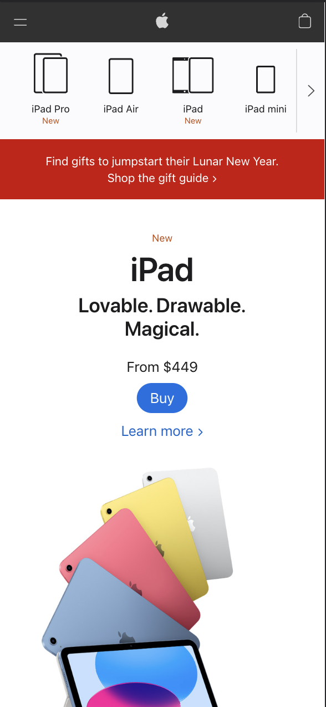
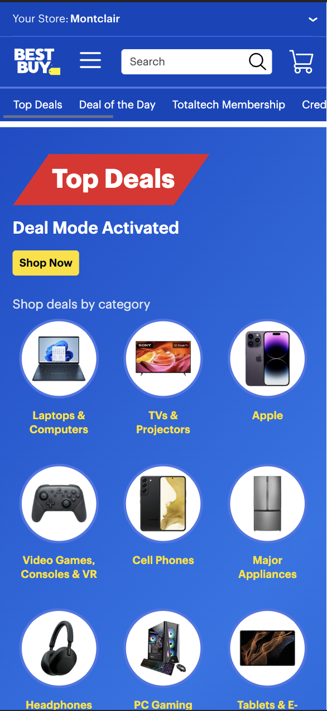

Contrast
Apple
Website: apple.com
Apple Developers used a smart amount of contrast in their page to highlight their products and make them stand out of the rest of the content. Their background colors on the page are either black or white, which makes their products pop, therefore grabbing the user's attention to what matters the most to them.
Alignment
Bestbuy
Website: bestbuy.com
Thanks to the wide variety of products BestBuy sells, aligning images and content was a hard task to accomplish. Nevertheless, they clearly maximized the space they had to align all possible images, which becomes noticeable in their home page, by creating a grid of elements that are perfectly aligned and comfortable to observe, without feeling overwhelmed by the amount of items aligned. We can observe that all images inside the circled content are perfectly aligned, all circles are perfectly aligned, and all text is perfectly aligned. It is a great example of how to align items in a website.
White Space and Clean Design
Github
Website: github.com
The amount of information that github handles and displays on a computer's browser is inmense. However, when using a mobile interface, we can notice that their use of white space allows the website to be easy accessible and readable, giving the users a great experience. They only focus on the most important information to display, putting all extra content inside buttons like "view more" or a list of repositories. This is a great example of white space balance in a website.